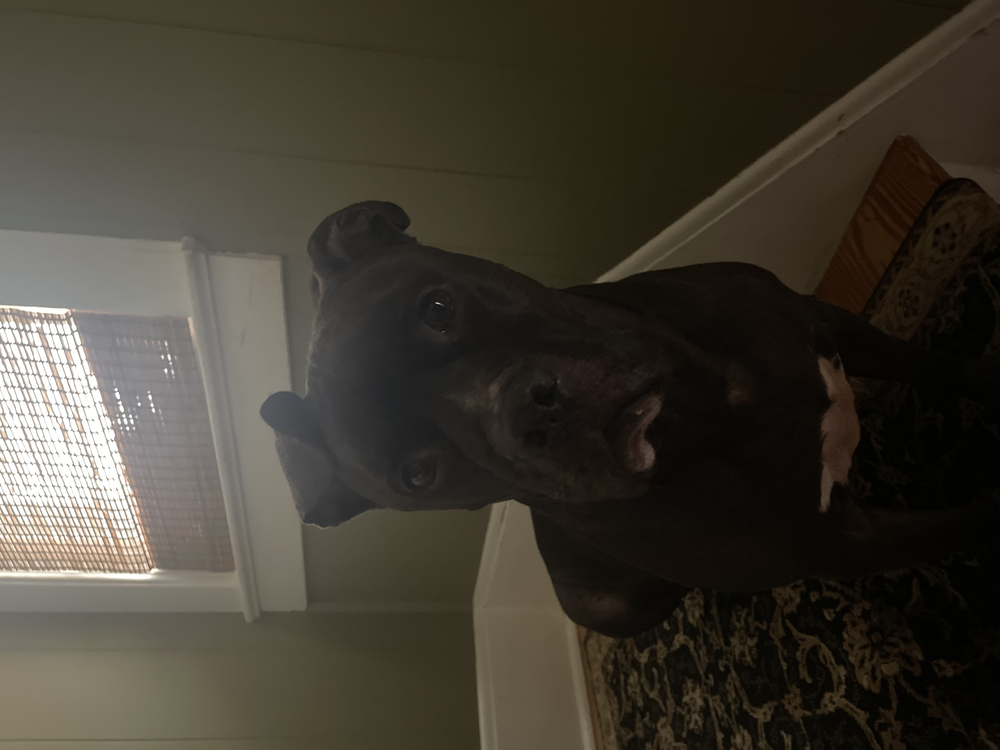

Hello! I'm Silas.
I'm a 16-year-old guy who thoroughly enjoys streaming on Twitch and regularly uploading videos on YouTube. I possess strong technological skills, having successfully constructing my own gaming PC in 2023. Additionally, I share my life with my dog named Bubba, who is a mix of Pitbull and Terrier.
My future career aspirations involve pursuing a college education in web design and development after high school to obtain a bachelor's degree. Following my academic endeavors, I intend to secure a full-time position in the field of web design and development. I find fulfillment in web design and programming through the creation and design of websites. The process of dedicating substantial time and effort to develop well-functioning websites is something I particularly appreciate.
